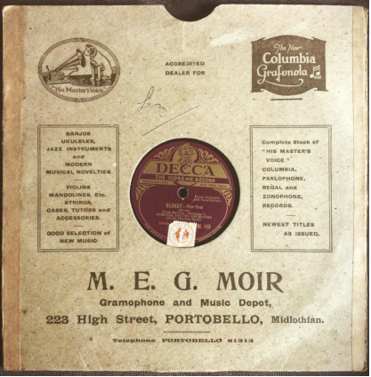
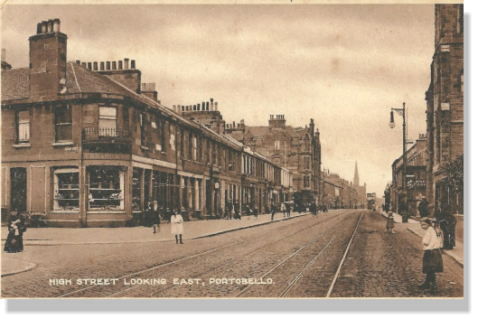
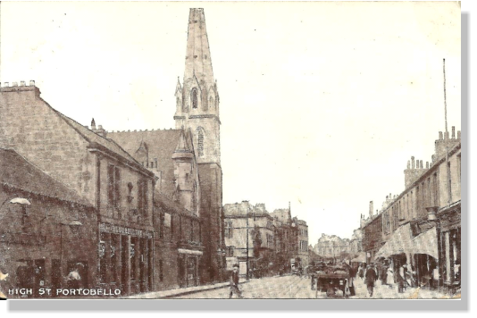

M.E.G. MOIR

When a friend showed me this photograph of a 78rpm (revolutions per minute) record he had bought it raised two questions. Why did the record have a stamp on it and where had Portobello Gramophone and Music Depot been?
Investigations reveal that the stamps were fixed to records as a form of receipt by the recording companies to show they had paid the mechanical copyright royalties due under various Copyright Acts and General Regulations. This evolved from stamping printed music with the composer’s signature to show copyright. These stamps were first introduced in the United Kingdom in July 1912 and had stopped being used by 1939. Records were generally made of shellac between about 1898 and the 1950s, after which vinyl was used. This record by Ambrose and his Orchestra was produced about 1930.
Post Office Directories show that Miss M.E.G. Moir ran the depot at 223 Portobello High Street from 1926 until 1938. Previous to this it had been Elsmere Photographic Studio.

This postcard shows Ellesmere Photographic Studio on the right, just past the church, to the right of the lamp-post.

223 no longer exists but was located on Portobello High Street beside Windsor Place Church, where the new flats are now.
Who was Miss Moir? Her home address was given as 25E Abercorn Terrace from 1926 until 1933, with her business address given as her home address from then until 1938. Mary Eliza Graham (M.E.G.) Moir was born on 17th May 1885 at 5 Leith Street Terrace, Edinburgh to Robert Moir, widower, silver engraver, and Amelia Moir, widow of Alexander Burn, a mercantile clerk. Robert and Amelia were married on 27th December 1880. Robert was 52 years old and Amelia was 34. Her maiden name was Graham. Robert must have been a skilled craftsman, probably making them a middle-class family. This might explain how Meg, as she seems to have been known, could afford to establish such a grandiose sounding business. It was well stocked. Not only did it sell records and sheet music, but also an assortment of musical instruments, musical novelties and accessories. The music depot also appears to have been well known across a wider area than Portobello. Evidence of this is given in Tony Smith’s biography of footballer Gordon Smith, where it states: “Since moving down to the big city, Gordon would browse all the record stores. In nearby Portobello he would visit Meg Moir’s record shop …”.
Meg’s death in the Royal Infirmary, from cancer, was recorded on 5th February 1938. She is described on her death certificate as a Music Dealer and single. She seems to have been a successful business woman, with customers coming from a wide area to buy their records and other musical requisites.
Margaret Munro